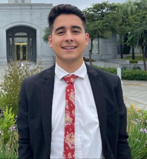

Elio Abalos | WDD 130
Hello! My name is Elio Abalos and I'm from Santa Fe, Argentina. I like to spend time with my friends and my Girlfriend Sofia, and i love play and watch soccer.I served a mission in Chile, Viña del Mar, and finished in 2024. Since then, I have studied at BYU Path and am currently studying software development at BYU-Idaho.